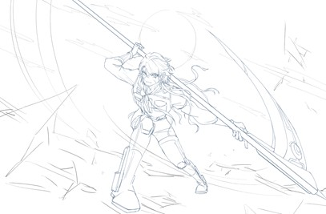

물에 젖은 듯한 짙은 민트색, 속머리는 짙은 갈색으로 엔의 영향인지 엔 추가투여 실험 이후로 색이 다르게 났다.
얇은 머리카락으로 푸슬푸슬한 머릿결을 가졌고 겉머리는 단발, 속머리는 장발(허리~엉덩이)의 모양새를 유지하고 있다.
매섭도록 날카로운 눈매, 짧지만 풍성한 속눈썹과 짙은 눈썹으로 강한 인상의 소유자고 눈동자는 머리색과 같은 민트색에 은은하게 청색안광이 빛난다. 몸에 점이 많다. 얼굴만 보면 왼쪽 콧날에 나란히 두개, 오른 입가에 하나가 보인다. 몸에도 여러곳에 점이 많이 퍼져있다.
머리색과 강한 인상 외에 또 눈에 띄는 점이라면, 험악한 흉터들. 히트맨이거니와 다른 히트맨들보다 정면돌파를 많이 하는 포지션의 관계로 몸 전체에 생으로 보이기엔 무섭다고 생각들만큼 흉터로 뒤덮혀 있다. 남에게 보여 좋을건 없는 부분이라 언제나 목을 전부 덮는 타이즈 상의와 하의를 꼭 받쳐입는다.(여름에도..)
털털함, 단순함, 성깔 있는, 정에 약한, 신뢰
멘탈이 단단하고 단순하고 간결하게 생각하길 좋아하며 좋지 않은 일은 금방 털어내고 잊고 어떤 유형의 사람을 만나도 적당히 대응이 가능한 털털한 성격을 가졌다.
사교성이 엄청 좋은 편은 아니지만 오는 사람에겐 대응이 가능한 정도, 관심이 가는 상대라면 거리낌 없이 말을 걸기도 한다. 제멋대로인 면도 있다. 그저 한번 꽂힌 것에 깊은 생각 없이 돌진하게 되는 경향이 있는데 이 점이 주변 사람에겐 제멋대로란 평을 받고있다. 꽂힌 지점이 감정이 섞일 때도 있어 성질머리가 나쁘다는 말도 종종 듣는다...(그래도 금방 잊으니까 함만 봐주자) 유한 부분이 있다면 정이 많고 정에 약하단 것. 사나운 길고양이 처럼 보여도 정 앞에선 따스히 대할 줄도 알고 나름의 배려도 하고 그렇다네요(랴님 감상: 맨날 나 물던 길고양이가 어느날 다리에 머리 부빔) 그리고 이 모든 특징들 밑에 자리 잡혀있는건 타인에 대한 깊은 신뢰와 충성스러움. 본부를 위해 컸기때문에 본부에 대한 의문이 있을지언정 의심은 없고 충성을 바치는게 몸에 베었고 이것은 성격에도 영향을 미쳤다. 한번 신뢰를 한 상대는 끝까지 믿는다.
"그 나무는 화려한 나뭇잎도, 아름다운 가지도, 열매도 없다. 그저, 심 굵은 몸통과 깊고 강한 뿌리만 있을 뿐.
그러나 태풍이 휘몰아 칠 때 마지막까지 남는 건 이런 나무 뿐이었나, 그는 그런 존재다. 결코 만만히 볼 수 없다."
그의 특성은 '강화육체'
피부, 근육, 골격 등이 일반인과 보통 초월자와도 조직 자체가 달라 내구도가 월등히 뛰어나고 낼 수 있는 기본 체력, 근력, 근지구력, 심폐 지구력 등이 강해 그의 능력을 괴력이라 말하는 사람도 있다. 몸에 힘과 내구도를 담당하는 기본 기관이 튼튼할 뿐, 두뇌라던지 시청후각 기관은 꽤 평범하다.
태어나서부터 엔이 스민 상태로 태어났고, 5세에 본부의 엔 추가투여 실험으로 강화상태 증폭과 힘을 순간폭발적으로 출력할 수 있는 능력을 얻었다.
(이 실험엔 콘실리에리도 관여를 했다고 조용히 말이 돌고 있다. 민트에게 주입한 엔은 그가 따로 제공했다는 소문.)
이런 신체특성은 자연스럽게 그를 히트맨으로 만들었다. 본부에서 특수 제작한 사이드블레이드(엔진과 총탄이 달린 거대한 낫)를 주무기로 정면돌파하는 싸움방식에 능하다.
강인한 육체덕에 스스럼 없이 적진에 뛰어들줄 알았고 행동대장이란 타이틀이 붙어있다.
+)일상생활에 적당히 힘빼고 살아가도록 몇년에 걸쳐 빡세게 훈련, 교육 받아 일상에 힘이 과해서 일어날 불상사는 잘 안일어남 아마…

갓 태어난지 얼마 안 된 초월자 신생아는 부모에게 겁을 주기 충분했다. 괴물이 들린 아이를 낳았다며 겁에 질린 부모는 아이를 숲속에 버렸지만, 계승자가 태어나고 곧 숨이 질거란 예견을 받은 콘실리에리는 본부 사람을 보내 버려진 아이를 찾고 구해내어 본부에서 요원으로 길러지게 된다. 민트가 말을 떼고 걸음마를 떼는 동안 본부에선 적에 대항하기 위해 더 강한 초월자를 양성하고자 기존의 초월자에게 엔을 더 투여하면 어떨지에 대한 연구를 진행하고 있었고, 실험을 이행할 실험체를 찾고 있었다. 계승자인 초월자, 성공 확률이 높으면서도 잘못되면 계승자 하나를 잃을 수 있는 확률에 민트가 5살이 되던 해 실험 계획을 들은 콘실리에리가 엔을 따로 제공해 실험을 진행했단 소문속에 민트는 공식적 첫번째 본부의 실험체로 미미한 후유증이 달린것을 제외하면 제법 안정적이게 성공했다. 추가적인 특성을 얻었다. 민트의 명치부근엔 여전히 실험의 자국이 남아있다. 미미한 후유증이란것은 간헐적으로 불특정한 때에 머리에 안개가 낀 듯 깊은 생각을 하지 못하게 된 것. 얻은것에 비하면 미미한 것이었다. 본부는 후유증에 대해 알지 못한다. 스스로도 이게 실험에 대한 후유증이라고 알고 있지 않는다. 그리고 이것은 민트가 본부와 동료에게 더 의지하는 장치인 동시에 트라우마를 만들게 했다.
민트는 머리를 쓰는것에 자신이 없었다. 그야 몸을 썼지 생각을 깊게 하지 못하기 때문에, 그럴 수 밖에 없다고 생각했고 이것이 문제라 생각하진 않았다. 본부의 상부와 오퍼레이터들이 지시를 내려줄거니까. 17살 때 임무 중, 문제는 발생했다. 동료 히트맨 둘과 함께 임무를 나간 날, 그 날은 불안하게 전파가 좋지 않아 통신이 깨끗하지 않았다. 그리고 본부와 이어진 통신은 위험의 순간에 끊겨 버렸다. 임무 완수의 코앞에서 다수의 적에게 발각된것. 끊긴 통신으로 오직 민트 본인의 판단으로 동료들과 이 상황을 헤쳐야 했다. 후유증이 트라우마를 만들었다 말했듯 운 나쁘게 이 상황에 사고는 돌아가지 않았고, 순간의 잘못 된 선택으로 동료 둘을 몽땅 잃고 자신만 거의 반 시체 상태로 돌아온 기억이 있다. 자신의 멍청한 머리, 좋은 선택을 내릴 수 없어 동료를 지키지 못한 트라우마는 마음 깊이 비수로 꽂혔고 이 때문에 혼자인 자신의 판단에 언제나 의심을 하며 전략을 짜는 사람, 명령을 내리는 사람에 의존도가 집착적이게 높다.
오랜 기간 본부의 요원으로 활동하면서 본부 1지부에 대해선 장소, 인물 등등 거의 모르는게 없을 정도로 잘 알고 있다. 그리고 보스와 콘실리에리에 대한 거부감이(높은 사람을 대한다는 압박감?) 전혀 없다. 어릴 때 그를 보게 된게 원인이었을까, 아이의 천진함으로 거리낌 없이 콘실리에리를 찾아가고 대화를 하러 갈 자신감이 있음... 그리고 그게 크고 나서는 좀 줄었지만 여전히 본부의 사람들 중에선 편하게 생각하는 사람 중 하나일것이다.
수호하는 자(확정인진 잘 몰겟음..)
각종 전쟁과 재해를 막은 칭송받던 장수.부상으로 인해 은퇴해 마을에서 조용히 지내던 중 지식의 주인과 예언가가 찾아 와 다시 한번 지키고 싶은것을 지키기 위해 초월자가 되기로 했다.